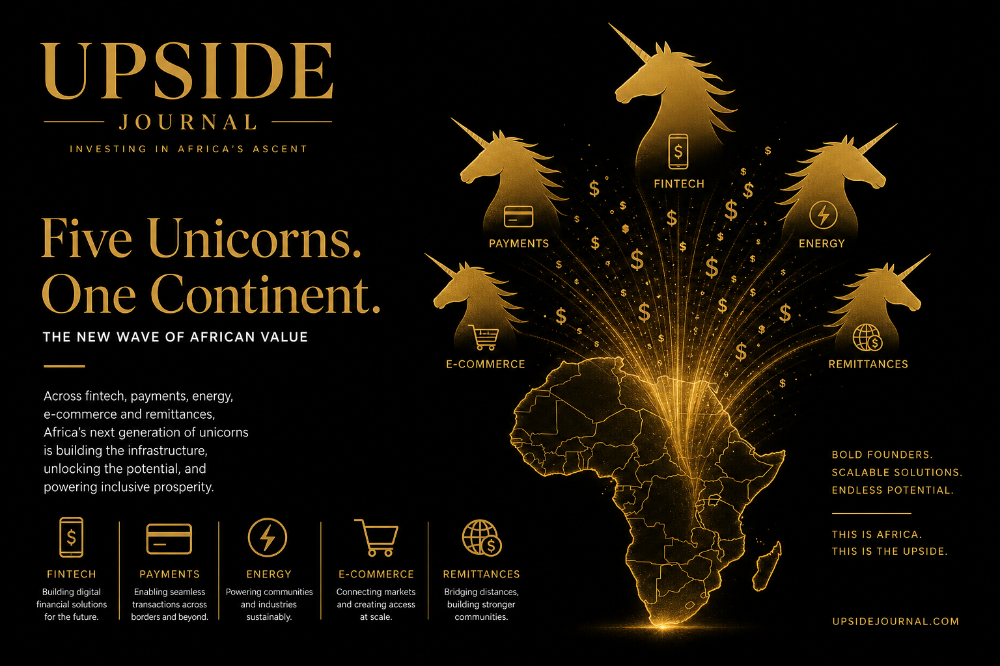

Africa ended 2025 without minting a single new tech unicorn. Zero.
In the same year, the continent's total tech funding rose 25% year-on-year to just over $4 billion. Series A and B activity picked up meaningfully. Kenya alone attracted over $1 billion. The ecosystem grew healthier, more resilient, and more mature by every structural metric.
And yet, Western VCs — the same firms that poured $300 billion into four AI companies in a single quarter — are still largely sitting on the sidelines of the most underfunded tech market in the world. The question isn't whether Africa has unicorn-worthy companies. It's why the capital that should be there isn't.
The Funding Paradox
Here's the paradox that defines African tech in 2026: the ecosystem is maturing faster than the capital flows that fund it.
According to Partech's Africa Tech Venture Capital report, 2025 marked the strongest funding level since 2022, with total equity and debt reaching $4 billion. Debt financing hit a record $1.6 billion — up 63% year-on-year — signalling that lenders see enough revenue traction to underwrite risk. Equity funding grew 8%, with Series A and B rounds finally showing the scaling-stage activity that had been missing.
But the concentration is stark. Kenya, South Africa, Egypt, and Nigeria captured 72% of all funding. And the late-stage gap — the Series C+ rounds that create unicorns — remains almost entirely unfilled by Western institutional capital.
Meanwhile, at least 18 companies across fintech, mobility, energy, healthtech, and property are being closely watched by investors as potential unicorn or IPO candidates. They're building in markets of hundreds of millions of consumers. They're solving infrastructure problems that don't exist in Silicon Valley. And they're doing it at a fraction of the capital their Western peers consume.
5 Companies Western VCs Should Be Watching
1. M-Kopa (Kenya/Nigeria) — Fintech Infrastructure
M-Kopa raised approximately $166 million in a Series F round in 2025 and posted its first-ever profit. The company provides asset financing for smartphones, solar systems, and other essential products to underbanked consumers across East and West Africa. With a profitable unit economics model serving customers that traditional banks ignore, M-Kopa's path to a $1 billion+ valuation is less a question of "if" than "when." The proof is in the P&L — a profitable African fintech at this scale is exceptionally rare.
2. Moniepoint (Nigeria) — Payments & Banking

Already one of Bloomberg's "25 African Startups to Watch," Moniepoint processes payments for over 800,000 businesses in Nigeria and is rapidly expanding its banking infrastructure. The company has built the kind of merchant network density that took Square years to achieve in the US — and it's doing it in a market of 220 million people where digital payment penetration is still early. The infrastructure play is the investment thesis.
3. LemFi (UK/Africa) — Cross-Border Remittances
Founded by Ridwan Olalere, LemFi raised approximately $53 million and is building the plumbing for African diaspora remittances — a market worth over $100 billion annually. The company targets the specific pain point of sending money home: slow transfers, poor FX rates, and limited last-mile delivery. With the African diaspora in the US, UK, and Europe growing and increasingly tech-savvy, LemFi is positioned at the intersection of demographic tailwind and infrastructure need.
4. Sun King (Kenya) — Clean Energy Distribution
Sun King (formerly Greenlight Planet) has sold over 100 million solar products across Africa and South Asia, addressing the energy access gap for off-grid populations. The company's distribution network — thousands of field agents across multiple countries — is a competitive moat that's nearly impossible to replicate. As climate-focused capital grows and ESG mandates tighten, Sun King sits at the exact intersection of impact and returns that institutional investors claim to want.
5. Wasoko/MaxAB (Pan-Africa) — B2B E-Commerce
The 2023 merger of Wasoko and MaxAB created the largest B2B e-commerce platform in Africa, connecting informal retailers to supply chains across East and North Africa. The informal retail sector represents over 80% of consumer goods distribution in most African markets — a $600 billion addressable market that formal retail has failed to penetrate. The merged entity has the geographic footprint and supply chain infrastructure that enterprise-grade B2B commerce requires.
Why the Capital Gap Persists
The structural reasons are well-documented but worth repeating:
Perception lag. Many Western LPs still associate African tech with the high-profile failures and governance controversies of 2022–2023, even as the ecosystem has meaningfully matured since then.
FX risk. Currency volatility in markets like Nigeria, Egypt, and Kenya makes dollar-denominated returns harder to model. This is a real risk — but it's also priced into valuations, creating entry points that the same investors would never find in the US market.
Due diligence friction. Most Western VC firms don't have on-the-ground presence in African markets. The information asymmetry that kills most cross-border deals is amplified when the GP has never visited the company's market.
Allocation inertia. When $300 billion flows into AI in a single quarter, the opportunity cost of deploying capital into Africa feels high — even when the risk-adjusted returns may be superior.
The Contrarian Bet
Here's the contrarian case: the best time to invest in African tech is precisely when everyone else is looking the other way.
The companies listed above are building real businesses with real revenue in markets with real demographic tailwinds. The continent's working-age population will exceed 1 billion by 2035. Mobile penetration is approaching 50%. Digital payment adoption is inflecting. And the late-stage capital gap means that the founders who survive are, by definition, the most capital-efficient operators in global tech.
Western VCs have a choice: deploy capital now at reasonable valuations into markets that will define the next decade of global growth — or wait until the unicorns are minted and pay 10x more for the same companies. History suggests they'll do the latter. The smart money will do the former.